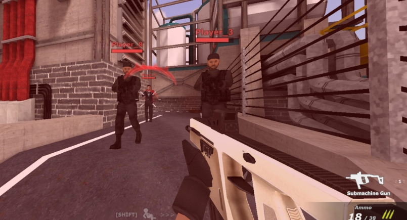
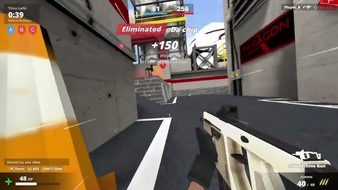
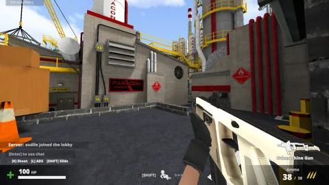

Deadshot.io is the real deal if you're looking for a browser FPS that actually rewards mechanical skill. Launched in 2022 and still sitting in the top 3 most-played browser shooters in 2026, it delivers fast-paced arena combat with zero downloads and zero accounts required. Think CS:GO meets the accessibility of .io games.
The gunplay is tight, movement is deep, and the skill ceiling is higher than most people expect from a browser game. Whether you're a casual player looking to survive your first match or a grinder trying to climb the leaderboard, this guide covers everything you need to know.
Game Overview
Deadshot.io drops you into an arena-based multiplayer FPS where reflexes and positioning decide who wins. The game features multiple competitive modes, a progression system with weapon unlocks, and maps that reward smart use of vertical space and cover.
What makes it stand out from other browser shooters is the movement system. Slide jumping, air strafing, and dash bunnyhopping aren't just cosmetic — they're core mechanics that separate average players from the ones topping the leaderboard. The headshot multiplier is also significant, so aim training directly translates to better performance.
| Feature | Details |
|---|---|
| Game Type | First-Person Shooter (FPS) |
| Platform | Web Browser (Desktop, Chromebook, Tablet) |
| Game Modes | FFA, TDM, Hardpoint, Kill Confirmed, Domination |
| Players | Multiplayer (real-time) |
| Price | Free (no download, no account required) |
| Released | 2022 |
How to Play
Jumping into a match takes seconds. Click "Play" and you're matched into a live game immediately. No lobbies, no waiting screens. You can also create custom games to pick specific maps and modes, or share a link with friends for private matches.
Your objective depends on the game mode:
- Free for All (FFA): Every player for themselves. Highest kill count wins.
- Team Deathmatch (TDM): Two teams, first to the kill limit wins. Communication matters here.
- Hardpoint: Capture and hold a rotating objective zone. Time in the zone scores points.
- Kill Confirmed (KC): Enemies drop dog tags when killed. Collect tags to score — kills don't count unless confirmed.
- Domination: Capture and hold multiple control points across the map. Team coordination is essential.
Health regenerates slowly after you take damage, but any incoming fire interrupts the process. This creates natural disengage windows — pull back behind cover, let health tick up, then re-engage. Smart players use this rhythm to outlast opponents who just trade damage in the open.

Controls
Deadshot.io uses standard FPS controls. If you've played any keyboard-and-mouse shooter, you'll feel right at home. The slide mechanic (Shift) is what separates this from basic browser shooters — master it early.
| Key | Action |
|---|---|
| WASD | Move (forward, left, backward, right) |
| Mouse | Aim |
| Left Click | Shoot |
| Right Click / L | Aim Down Sights (ADS) |
| Space | Jump |
| Shift | Sprint / Slide / Crouch |
| R | Reload |
| Enter | Open Chat |
| ~ / Esc | Pause / Menu |
On mobile devices, the game supports touch controls with on-screen buttons for movement and shooting, plus swipe gestures for aiming. It works, but keyboard and mouse gives you a significant accuracy advantage — especially for headshots.
Weapons Guide
Deadshot.io has four primary weapon categories, each filling a specific combat role. Weapons come in tiers: Gray (basic) → Blue → Purple → Gold. Higher tiers deal more damage and have better handling. Always prioritize picking up upgraded weapons when available.

SMG (Sub-Machine Gun)
| Ammo | 40 rounds |
| Reload Time | 1.5 seconds |
| Best Range | Close-quarters |
The spray-and-pray option. High fire rate makes it forgiving for beginners and devastating up close. If you're pushing corners or fighting in tight spaces like Factory or Refinery, the SMG is your go-to. Just don't try to hit targets across the map with it.
Assault Rifle (AR)
| Ammo | 30 rounds |
| Reload Time | 1.7 seconds |
| Best Range | Mid-range |
The versatile all-rounder. If you're only learning one weapon, make it this one. Balanced damage, manageable recoil, and effective at most ranges. Perfect for TDM where you're fighting across medium distances and need flexibility.
Sniper Rifle (AWP)
| Ammo | 3 rounds |
| Reload Time | 2.03 seconds |
| Best Range | Long-range |
One-shot headshots. That's the entire pitch. If you can consistently land headshots, the sniper is the most powerful weapon in the game. But miss in a fast-paced arena and you're dead before the bolt cycles. High risk, highest reward. Best on open maps where you can maintain distance.
Shotgun
| Ammo | 2 rounds |
| Reload Time | 1.6 seconds |
| Best Range | Extreme close-quarters |
Point and delete. Two shells that melt anything in front of you at close range. Fun fact: a single pellet to the head counts as a headshot, so even glancing hits can be lethal. The shotgun also enables shotgun jumping — fire downward while jumping to launch yourself to unexpected positions. Skilled players use this to reach high-ground spots that seem impossible.
Tips & Strategies
This is the single most important technique in Deadshot.io. Here's how: sprint forward (hold W), press Shift to slide, then immediately press Space while sliding. You'll launch forward at roughly double walking speed. Players who slide jump are significantly harder to hit and can close distance or escape fights on their own terms. Standing still is a death sentence in this game — if you're not slide jumping, you're a free kill.
Headshots deal significantly more damage than body shots in Deadshot.io. With the sniper, a headshot is an instant kill regardless of the target's armor. Even with the AR or SMG, landing two headshots is often faster than spraying four body shots. Keep your crosshair at head height at all times — pre-aim common angles where enemies will appear. This one habit will improve your kill/death ratio more than anything else.
Once you're airborne from a slide jump, you can change your direction mid-air. Release W, hold A or D, and move your mouse in the same direction. Your trajectory curves while maintaining momentum. This makes you incredibly hard to track — enemies who try to pre-fire your landing position will miss because you've shifted your path. Combine air strafing with slide jumping and you're essentially a moving target that doesn't follow straight lines.
Every map in Deadshot.io has vertical elements — buildings, platforms, elevated areas. High ground gives you better sightlines, makes your hitbox smaller from below, and makes headshots easier due to downward angles. Claim elevated positions early in each match. On Forest, get to the tree platforms. On Snowfall, control the raised structures. The player holding high ground usually wins the fight.
Don't bring a sniper to a hallway fight. On tight maps like Factory, grab the SMG or shotgun — you need fast handling and close-range damage. On open maps with long sightlines, the AR or sniper gives you range advantage. Versatile players swap loadouts based on the map rotation. If you're stuck running the wrong weapon for the engagement distance, reposition rather than fighting at a disadvantage.
Deadshot.io maps are designed with cover points — walls, crates, pillars, buildings. Use them. Peek out to take your shots, then duck back to avoid return fire. This technique (called "slicing the pie" in tactical shooters) lets you control the engagement angle. If you're caught in the open, slide toward the nearest cover immediately. Standing still while shooting is the fastest way to get eliminated.
In Domination and Hardpoint, kills alone don't win games. Capturing and holding objectives does. If your team is all chasing kills while the enemy holds the hardpoint, you'll lose even with a positive K/D ratio. Communicate with your team (press Enter to chat), coordinate captures, and defend objectives. A balanced approach — securing the objective while denying enemy pushes — wins more matches than raw fragging.

FAQ
Yes, 100% free. No downloads, no sign-ups, no hidden paywalls. Just open deadshot.io in your browser and play. The game runs on HTML5 and works on most modern browsers, including Chromebooks and school computers.
Yes. You can create custom games and share a link with friends to join the same match. You pick the map and mode — perfect for private scrims or just messing around.
Start with the Assault Rifle. It's effective at most ranges, forgiving on aim, and teaches you the fundamentals of positioning and recoil control. Once you're comfortable, branch out to the sniper for long-range play or the SMG for aggressive close-quarters pushes.
Three things: practice headshot aim (keep crosshair at head level), master slide jumping (it makes you faster and harder to hit), and learn map layouts (know where enemies spawn and common engagement areas). These three skills matter more than any weapon choice or game sense.
The game supports touch controls on mobile browsers, but the experience is designed for keyboard and mouse. Mobile works for casual sessions, but competitive play really needs a physical keyboard and mouse for precision aiming and movement mechanics.
Deadshot.io is proof that browser FPS games have come a long way. The movement system adds a layer of mechanical depth that most browser shooters lack, and the weapon variety keeps every match fresh. Master slide jumping, keep your crosshair at head height, and always fight from cover — that's the foundation for climbing the leaderboard.
Ready to drop in? Head to deadshot.io and start practicing those slide jumps.
Play Deadshot.io NowLast updated: June 18, 2026
Written by the iogameguide.com team